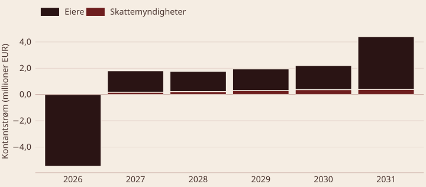
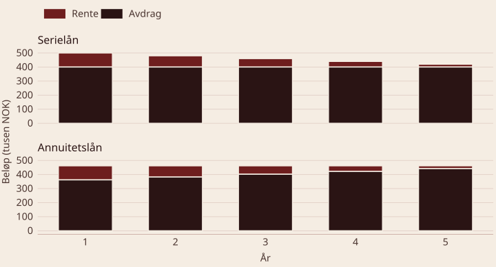

BED3 — Investering og finans · Forelesning 2
Norges Handelshøyskole
Oppsummering av caset
| Beskrivelse | Hvor? | |
|---|---|---|
| 1 | Beregn kontantstrøm til totalkapitalen | Oppgave + video |
| 2 | Avgjør om prosjektet er økonomisk bærekraftig med NNV og IRR | Oppgave + video |
| 3 | Ta hensyn til skatt i beregningen og avgjør lønnsomheten | Video |
| 4 | Ta hensyn til lånefinansiering og avgjør lønnsomheten | Video |
| Linje | År (EURk) | 2025 | 2026 | 2027 | 2028 | 2029 | 2030 |
|---|---|---|---|---|---|---|---|
| 1 | I_0 | −5 000 | |||||
| 2 | Skrapverdi | 1 638 | |||||
| 6 | DB | 0 | 2 000 | 2 000 | 2 200 | 2 420 | 2 420 |
| 7 | FK | 0 | −93,6 | −93,6 | −93,6 | −93,6 | −93,6 |
| 11 | Arb.kap | −563 | 0 | −55 | −60,5 | 0 | 678 |
| 15 | KS smitte (neg) | 150 | −300 | −285 | −313,5 | −363 | −544,5 |
| 19 | KS smitte (pos) | −50 | 200 | 195 | 214 | 242 | 302 |
| 20 | KS TK | −5 463 | 1 806,4 | 1 761,4 | 1 947 | 2 205,4 | 4 401,3 |
Skatt
Avskrivninger
Lånefinansiering
Q1: Hvorfor er investeringskostnaden EUR 5 millioner og ikke 6? Fordi kostnadene til produktutviklingen allerede er påløpt. De skal ikke påvirke en beslutning om hva vi gjør framover.
Q2: Hvorfor binder EcoTech arbeidskapital i prosjektet? Arbeidskapital bindes for å finansiere lager, råvarer og kundekreditt.
Q3: Hvordan påvirker endringer i arbeidskapital kontantstrømmen til TK? Endringer i arbeidskapital er kontantstrømmer: økt arbeidskapital er en negativ kontantstrøm, redusert arbeidskapital en positiv (frigjøring av kapital).
| Skatt | Finansiering: nei | Finansiering: ja |
|---|---|---|
| Nei | Kontantstrøm til totalkapitalen før skatt | Kontantstrøm til egenkapitalen før skatt |
| Ja | Kontantstrøm til totalkapitalen etter skatt | Kontantstrøm til egenkapitalen etter skatt |
Del 1 av skatteberegningen
Definisjon — skatteberegninger
\text{Skatt} = (\text{Inntekter} - \text{Kostnader} - \text{Avskrivninger}) \cdot s_{\text{nominell}}
\text{KS}_{\text{etter skatt}} = \text{KS}_{\text{før skatt}} - \text{Skatt}
Nominell skattesats s har vært 22 % siden 2019.
Definisjon — effektiv skattesats Effektiv skattesats er den prosentvise reduksjonen i avkastning — altså i internrenten — som følger av at vi må betale skatt.
s_{\text{eff}} = \frac{y - y^{s}}{y} \qquad \Rightarrow \qquad y^{s} = y \cdot (1 - s_{\text{eff}})
der y^{s} er internrenten etter skatt.
Spørsmål — vis at effektiv skattesats er lik nominell (22 %) Finansinvesteringer gir ofte likhet mellom nominell og effektiv skattesats. Anta at du setter 100 kr i banken til 2,5 % årlig rente, betaler 22 % skatt på renteinntekten, og lar beløpet stå i to år.
s_{\text{eff}} = \frac{0{,}025 - 0{,}0195}{0{,}025} = 22\ \%
Q1: Hva er formelen for å beregne skatt på et prosjekts inntekt? \text{Skatt} = (\text{Inntekter} - \text{Kostnader} - \text{Avskrivninger}) \cdot s, der s er den nominelle skattesatsen.
Q2: Hva menes med en effektiv skattesats? I BED3 er effektiv skattesats den prosentvise reduksjonen i prosjektets internrente som følge av skattebetalinger.
Q3: Hvorfor regnes skatt som en utbetaling, når den beregnes fra regnskapsmessige resultater? Fordi skatt er en faktisk kontantutbetaling som reduserer prosjektets likviditet, selv om grunnlaget er regnskapsmessige inntekter og kostnader.
Del 2 av skatteberegningen
Definisjon — avskrivninger Avskrivninger representerer verdifall på et anleggsmiddel over tid, som følge av bruk, slitasje eller teknologisk foreldelse. De brukes for å fordele kostnaden ved en investering over dens økonomiske levetid.
Definisjon — saldoavskrivninger En metode der man avskriver en fast prosentandel a av restverdien hvert år. Avskrivningene er høyest i starten og avtar over tid.
Fordeler med saldoavskrivninger
Definisjon — saldoavskrivninger
B_{t} = I_{0} \cdot (1 - a)^{t} \qquad AV_{t} = \underbrace{I_{0} \cdot (1 - a)^{t-1}}_{B_{t-1}} \cdot a
| År | 0 | 1 | 2 | 3 |
|---|---|---|---|---|
| AV_t | 1 000 | 800 | 640 | |
| B_t | 5 000 | 4 000 | 3 200 | 2 560 |
EcoTech: I_0 = 5\,000\,000, a = 20\ \%. Beløp i tusen euro.
Avskrivninger
AV_{1} = 5\,000 \cdot (1-0{,}20)^{0} \cdot 0{,}20 = 1\,000 AV_{2} = 5\,000 \cdot (1-0{,}20)^{1} \cdot 0{,}20 = 800
Bokført verdi
B_{1} = 5\,000 \cdot (1-0{,}20)^{1} = 4\,000 B_{2} = 5\,000 \cdot (1-0{,}20)^{2} = 3\,200
Skattefordelen av avskrivninger tilsvarer nåverdien av evigvarende avskrivninger, diskontert med avkastningskravet etter skatt k^{s} og multiplisert med nominell skattesats:
PV = s \cdot \frac{I_{0} \cdot a}{k^{s} + a} = s \cdot \frac{AV_{1}}{k^{s} + a}
Vi bruker sumformelen for en uendelig geometrisk rekke:
PV = \frac{\overbrace{I_{0} \cdot a}^{AV_{1}}}{1 + k^{s}} + \frac{I_{0} \cdot a \cdot (1-a)}{(1 + k^{s})^{2}} + \frac{I_{0} \cdot a \cdot (1-a)^{2}}{(1 + k^{s})^{3}} + \dots
= \frac{I_{0} \cdot a}{1 + k^{s}} \underbrace{\left[\frac{1 - a}{1 + k^{s}} + \left(\frac{1 - a}{1 + k^{s}}\right)^{2} + \dots \right]}_{\text{uendelig geometrisk rekke}}
= \frac{I_{0} \cdot a}{1 + k^{s}} \cdot \frac{1}{1 - \frac{1-a}{1 + k^{s}}} = \frac{AV_{1}}{1 + k^{s} - (1-a)} = \frac{AV_{1}}{k^{s} + a}
PV = \frac{AV_{1}}{k^{s} + a} = \frac{1\,000\,000}{0{,}09 + 0{,}20} = 3\,448\,300
PV(\text{skattefordel}) = 3\,448\,300 \cdot 0{,}22 = 758\,620
Gjenstående komplikasjon: utrangering eller salg av investeringsobjektet.
Q1: Hvorfor påvirker ikke avskrivninger kontantstrømmen direkte? Avskrivninger er en kalkulatorisk kostnad. De påvirker kontantstrømmen indirekte, gjennom skattefradraget.
Q2: Hva er fordelen med saldoavskrivninger framfor lineære? Saldoavskrivninger gir høyere skattebesparelser tidlig i prosjektet, og forbedrer dermed kontantstrømmen i de første årene.
Q3: Hvordan kan avskrivninger påvirke netto nåverdi? De reduserer skattepliktig inntekt og gir skattebesparelser som forbedrer kontantstrømmene, og dermed øker NNV.
Del 3 av skatteberegningen
Definisjon — utrangering og salg Utrangering: når et anleggsmiddel tas ut av bruk, enten det selges, skrotes eller erstattes. Salg: når et anleggsmiddel avhendes, og salgsprisen påvirker prosjektets kontantstrøm.
Viktig Salg kan gi gevinst eller tap som påvirker skattepliktig inntekt, og kontantstrømeffekten fra salg eller utrangering må inkluderes i analysen.
Eksempler: salg av produksjonsutstyr ved prosjektets slutt, eller skroting av gamle maskiner som erstattes med ny teknologi.
Løsøregjenstander (I)
Verdifulle aktiva (II)
NNV = -I_{0} + \sum_{t=1}^{T} \frac{CF_{t} \cdot (1 - s) + s \cdot AV_{t}}{(1 + k^{s})^{t}} + \frac{S_{T}}{(1 + k^{s})^{T}} - s \cdot \frac{(S_{T} - B_{T}) \cdot a}{(1 + k^{s})^{T} \cdot (k^{s} + a)}
Formelen har fire ledd. De forklares på de neste slidene.
NNV = \underbrace{-I_{0}}_{\textbf{1: investeringsbeløp}} + \sum_{t=1}^{T} \underbrace{\frac{CF_{t} \cdot (1 - s) + s \cdot AV_{t}}{(1 + k^{s})^{t}}}_{\textbf{2: kontantstrøm og avskrivninger}}
+ \underbrace{\frac{S_{T}}{(1 + k^{s})^{T}}}_{\textbf{3: nåverdi av salgsbeløp}} \underbrace{- s \cdot \frac{(S_{T} - B_{T}) \cdot a}{(1 + k^{s})^{T} \cdot (k^{s} + a)}}_{\textbf{4: effekt av utrangering på evige avskrivninger}}
Effekten av utrangering på de evige framtidige avskrivningene etter at investeringen er avsluttet.
Salgsgevinst S_{T} > B_{T}
Tap S_{T} < B_{T}
Spørsmål — hva blir netto nåverdi av salget, gitt at det skjer i dag? Salgspris maskin (saldogruppe a): 30 · bokført restverdi: 10 · nominell skattesats: 22 % · avkastningskrav etter skatt: 6 % · avskrivningssats a: 30 %
| Metode | Detaljer | Nåverdi av salg |
|---|---|---|
| Inntektsføring samme år | Betale skatt samme år, pluss evige avskrivninger av restverdi | 30 \cdot (1-0{,}22) + \frac{10 \cdot 0{,}30 \cdot 0{,}22}{0{,}06 + 0{,}30} = 25{,}23 |
| Nedskrive hele salgsbeløpet | Smører skatten utover ved å redusere balanseverdien på saldogruppen tilsvarende gevinsten | 30 - \frac{20 \cdot 0{,}30 \cdot 0{,}22}{0{,}06 + 0{,}30} = 26{,}33 |
| Nedskrive restverdien | Inntektsføre salgsgevinsten og skatte av gevinsten | 30 - (30-10) \cdot 0{,}22 = 25{,}6 |
Spørsmål — hva blir netto nåverdi av salget, gitt at det skjer i dag? Salgspris maskin (saldogruppe a): 8 · bokført restverdi: 10 · nominell skattesats: 22 % · avkastningskrav etter skatt: 6 % · avskrivningssats a: 30 %
Vi antar at salget skjer i dag, altså at vi står på tidspunkt t = T.
NNV = S_{T} - s \cdot \frac{(S_{T} - B_{T}) \cdot a}{k^{s} + a} = 8 - \frac{(8-10) \cdot 0{,}30 \cdot 0{,}22}{0{,}06 + 0{,}30} \approx 8{,}37
Spørsmål — hva blir netto nåverdi av salget, gitt at det skjer i dag? Salgspris skip (saldogruppe e): 30 · bokført restverdi: 10 · nominell skattesats: 22 % · avkastningskrav etter skatt: 8 % · avskrivningssats: 14 %
For saldogruppe e–h gjelder a = 0{,}20, uavhengig av hvilken sats eiendelen avskrives med.
NNV = 30 - \frac{20 \cdot 0{,}20 \cdot 0{,}22}{0{,}08 + 0{,}20} \approx 26{,}86
Spørsmål — hva blir netto nåverdi av salget, gitt at det skjer i dag? Salgspris skip (saldogruppe e): 8 · bokført restverdi: 10 · nominell skattesats: 22 % · avkastningskrav etter skatt: 8 % · avskrivningssats: 14 %
Også her gjelder a = 0{,}20 for saldogruppe e–h.
NNV = 8 - \frac{(8-10) \cdot 0{,}20 \cdot 0{,}22}{0{,}08 + 0{,}20} \approx 8{,}31
NNV = -I_{0} + \sum_{t=1}^{T} \frac{CF_{t} \cdot (1 - s)}{(1 + k^{s})^{t}} + \underbrace{s \cdot \frac{AV_{1}}{k^{s} + a}}_{\text{skattefordel, evige saldoavskrivninger}}
Q1: Hvor stor er en eventuell salgsgevinst eller et salgstap? \text{Gevinst eller tap} = \text{salgspris} - \text{bokført restverdi på salgstidspunktet}.
Q2: Hvordan påvirker et tap ved salg prosjektets kontantstrøm? Et tap gir en skattebesparelse som øker kontantstrømmen, fordi tapet trekkes fra skattepliktig inntekt.
Q3: Hva er fordelen med å redusere avskrivningsgrunnlaget framfor å inntektsføre en gevinst? Det sprer skattebelastningen over flere år. Siden kontantstrømmer er mindre verdt jo lenger fram i tid de kommer, er dette mer lønnsomt enn å skatte av hele beløpet i dag.
Kontantstrøm etter skatt
| Linje | År | 2025 | 2026 | 2027 | 2028 | 2029 | 2030 |
|---|---|---|---|---|---|---|---|
| t | 0 | 1 | 2 | 3 | 4 | 5 | |
| 20 | KS TK før skatt | −5 463 | 1 806,4 | 1 761,4 | 1 946,9 | 2 205,4 | 4 401,3 |
| 21 | DB − FK | 1 806,4 | 1 806,4 | 1 996,4 | 2 205,4 | 2 205,4 | |
| 22 | Avskrivninger | −1 000 | −800 | −640 | −512 | −409,6 | |
| 23 | Resultat før skatt | 806,4 | 1 006,4 | 1 356,4 | 1 693,4 | 1 795,8 | |
| 24 | Skatt | −177,41 | −221,41 | −298,41 | −372,55 | −395,08 | |
| 25 | KS TK etter skatt | −5 463 | 1 629 | 1 540 | 1 648,5 | 1 832,9 | 4 006,2 |
Linje 21–23 er mellomregninger. Forskjellen mellom linje 20 og 21 for t \in \{2,3\} skyldes at arbeidskapital inngår i kontantstrømmen, men ikke i regnskapet. I år 5 skyldes differansen også at salgs- og skrapverdi inngår i linje 20, men ikke i linje 21.
(\text{DB} - \text{FK})_{2027} = \underbrace{2\,000}_{\text{DB nytt (L6)}} - \underbrace{93{,}6}_{\text{FK (L7)}} - \underbrace{300}_{\text{neg. DB gammelt (L13)}} + \underbrace{200}_{\text{pos. DB nytt (L17)}} = 1\,806{,}4
AV_{2027} = I_{0} \cdot (1-a)^{t-1} \cdot a = 5\,000 \cdot (1-0{,}20)^{1} \cdot 0{,}20 = 800
\text{Res. før skatt} = 1\,806{,}4 - 800 = 1\,006{,}4 \qquad \text{Skatt} = 1\,006{,}4 \cdot 0{,}22 = 221{,}41
\text{KS TK etter skatt} = 1\,761{,}4 - 221{,}41 = 1\,540

Avkastningskravet til totalkapitalen etter skatt er 9,0 %.
NNV = -5\,463 + \frac{1\,628{,}9}{1{,}09} + \frac{1\,540}{1{,}09^{2}} + \frac{1\,648{,}5}{1{,}09^{3}} + \frac{1\,833}{1{,}09^{4}} + \frac{4\,006}{1{,}09^{5}} = 2\,502{,}8
y^{s} = 22{,}92\ \% \qquad \Rightarrow \qquad s_{\text{eff}} = \frac{28{,}44\ \% - 22{,}92\ \%}{28{,}44\ \%} = 19{,}41\ \%
Spørsmål — må vi justere for salgsgevinst eller tap? Fra caseteksten har produksjonsutstyret en utrangeringsverdi på EUR 1 638 400.
Vi må beregne bokført restverdi etter fem år, med I_{0} = 5\,000\,000 og a = 0{,}20:
B_{5} = 5\,000\,000 \cdot (1-0{,}20)^{5} = 1\,638\,400
S_{T} = B_{T}, altså ingen gevinst og ingen tap — ingen justeringer er nødvendige.
Spørsmål — hvilke justeringer må vi gjøre ved gevinst? Anta at S_{T} = 2\,000\,000, og ikke 1 638 400.
Med en gevinst på 2\,000 - 1\,638{,}4 = 361{,}6 må ledd 3 og 4 beregnes og legges til nåverdien fra ledd 1 og 2.
NNV_{\text{med gevinst}} = 2\,502{,}8 + \frac{2\,000}{1{,}09^{5}} - 0{,}22 \cdot \frac{361{,}6 \cdot 0{,}20}{0{,}09 + 0{,}20} \cdot \frac{1}{1{,}09^{5}} = 3\,767
Spørsmål — hvilke justeringer må vi gjøre ved tap? Anta at S_{T} = 1\,200\,000, og ikke 1 638 400.
Med et tap på 1\,200 - 1\,638{,}4 = -438{,}4 må ledd 3 og 4 beregnes på samme måte.
NNV_{\text{med tap}} = 2\,502{,}8 + \frac{1\,200}{1{,}09^{5}} - 0{,}22 \cdot \frac{(-438{,}4) \cdot 0{,}20}{0{,}09 + 0{,}20} \cdot \frac{1}{1{,}09^{5}} \approx 3\,325{,}9
Kontantstrøm til egenkapitalen
Serielån
Annuitetslån
Sammenligning
Formler
\text{Avdrag} = \frac{\text{Lånebeløp}}{\text{Antall perioder}} \qquad \text{Rente} = \text{Gjenværende lån} \cdot \text{rentesats}
Kontantstrøm til egenkapitalen
\text{EK før skatt} = \text{netto TK} - \text{avdrag} - \text{rente}
\text{EK etter skatt} = \text{TK etter skatt} - \text{avdrag} - \text{rente} \cdot (1 - s)
Definisjon — annuitetsbeløp (fra formelarket)
CF_{0} \cdot A_{k,T}^{-1} = CF_{0} \cdot \frac{k \cdot (1+k)^{T}}{(1+k)^{T} - 1}
CF_{0}: lånebeløp · k: årlig rente · T: antall tilbakebetalingsperioder
Oppdeling
Kontantstrøm til EK
Følger samme struktur som for serielån.

Forutsetninger: 2 000 000 i lånebeløp og 5 % årlig etterskuddsvis rente. Serielån gir lavere kontantstrøm mot slutten av prosjektet, mens annuitetslån gir jevn kontantstrøm over hele perioden.
| Linje | År | 0 | 1 | 2 | 3 | 4 | 5 |
|---|---|---|---|---|---|---|---|
| 20 | KS TK før skatt | −5 463 | 1 806,4 | 1 761,4 | 1 946,9 | 2 205,4 | 4 401,3 |
| 36 | Lån og avdrag serielån | 2 000 | −400 | −400 | −400 | −400 | −400 |
| 37 | Renter serielån | −100 | −80 | −60 | −40 | −20 | |
| 38 | KS EK før skatt | −3 463 | 1 306,4 | 1 281,4 | 1 486,9 | 1 765,4 | 3 981,3 |
| 25 | KS TK etter skatt | −5 463 | 1 629 | 1 540 | 1 648,5 | 1 832,9 | 4 006,2 |
| 42 | Skattefordel av renter (22 %) | 22 | 17,6 | 13,2 | 8,8 | 4,4 | |
| 43 | KS EK etter skatt | −3 463 | 1 151 | 1 077,6 | 1 202,7 | 1 401,7 | 3 590,6 |
Lånebetingelser: 2 000 000 over fem år med 5 % etterskuddsvis rentebetaling.
Låneberegninger (EURk)
\text{Avdrag p.a.} = \frac{2\,000}{5} = 400
\text{År 1:}\ 2\,000 \cdot 0{,}05 = 100 \text{År 2:}\ (2\,000 - 400) \cdot 0{,}05 = 80 \text{År } n:\ (\text{lån} - (n-1) \cdot A) \cdot r
EK før skatt (L20 − L38)
\text{År 1:}\ 1\,806{,}4 - 400 - 100 = 1\,306{,}4
EK etter skatt (L25 − L43)
\text{År 1:}\ 1\,629 - 400 - 100 + 22 = 1\,151 \text{År 2:}\ 1\,540 - 400 - 80 + 17{,}6 = 1\,077{,}6
| Linje | År | 0 | 1 | 2 | 3 | 4 | 5 |
|---|---|---|---|---|---|---|---|
| 20 | KS TK før skatt | −5 463 | 1 806,4 | 1 761,4 | 1 946,9 | 2 205,4 | 4 401,3 |
| 33 | Renter annuitetslån | −100 | −81,9 | −62,9 | −43 | −22 | |
| 34 | Lån og avdrag annuitetslån | 2 000 | −362 | −380 | −399 | −419 | −440 |
| 38 | KS EK før skatt | −3 463 | 1 344,4 | 1 299,4 | 1 485 | 1 743,4 | 3 939,3 |
| 25 | KS TK etter skatt | −5 463 | 1 629 | 1 540 | 1 648,5 | 1 832,9 | 4 006,2 |
| 42 | Skattefordel av renter (22 %) | 22 | 18 | 13,8 | 9,4 | 4,8 | |
| 43 | KS EK etter skatt | −3 463 | 1 189 | 1 096,1 | 1 200,4 | 1 380,3 | 3 549,1 |
Låneberegninger (EURk)
\text{Annuitetsbeløp} = 2\,000 \cdot A_{5\%,5}^{-1} = 2\,000 \cdot 0{,}230975 = 461{,}9
EK før skatt (L20 − L38)
\text{År 1:}\ 1\,806{,}4 - 461{,}9 = 1\,344{,}4
EK etter skatt (L25 − L43)
\text{År 1:}\ 1\,629 - 461{,}9 + 22 = 1\,189 \text{År 2:}\ 1\,540 - 461{,}9 + 18 = 1\,096{,}1
| Linje | År | 0 | 1 | 2 | 3 | 4 | 5 |
|---|---|---|---|---|---|---|---|
| 46 | KS EK etter skatt | −3 463 | 1 151 | 1 077,6 | 1 201,7 | 1 401,7 | 3 590,6 |
| 45 | + KS gjeld | −2 000 | 500 | 480 | 460 | 440 | 420 |
| 44 | + KS skattemyndigheter | 155,4 | 203,8 | 285,2 | 363,8 | 390,7 | |
| 20 | = KS TK før skatt | −5 463 | 1 806,4 | 1 761,4 | 1 946,9 | 2 205,4 | 4 401,3 |
Antar serielån. Linje 44 for år 1 er skatten fra linje 24 minus skattefordelen av renter fra linje 42: 177{,}4 - 22 = 155{,}4.
Q1: Hva er forskjellen mellom kontantstrøm til TK og til EK? Kontantstrøm til TK er hele prosjektets kontantstrøm; kontantstrøm til EK tar i tillegg hensyn til lånekostnader og avdrag.
Q2: Hvordan påvirker rentekostnader kontantstrømmen til egenkapitalen? De reduserer kontantstrømmen til EK, men gir skattefradrag som forbedrer netto kontantstrøm.
Q3: Hvordan påvirker lånefinansiering risikoen i prosjektet? Den øker risikoen for egenkapitalen, fordi faste kostnader som renter og avdrag må dekkes uavhengig av prosjektets kontantstrøm.
Skatt og lån
Utrangering og salg